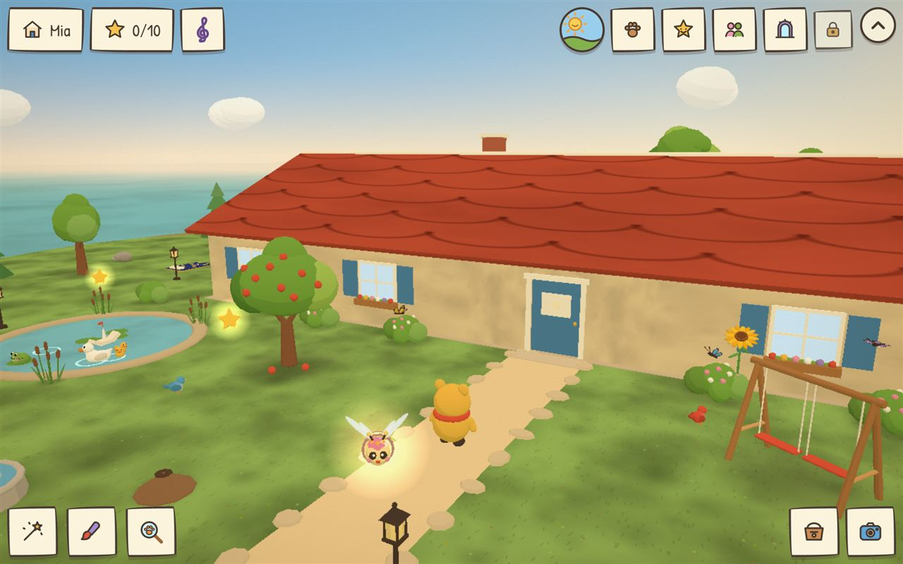
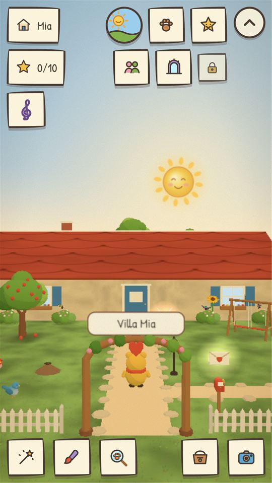
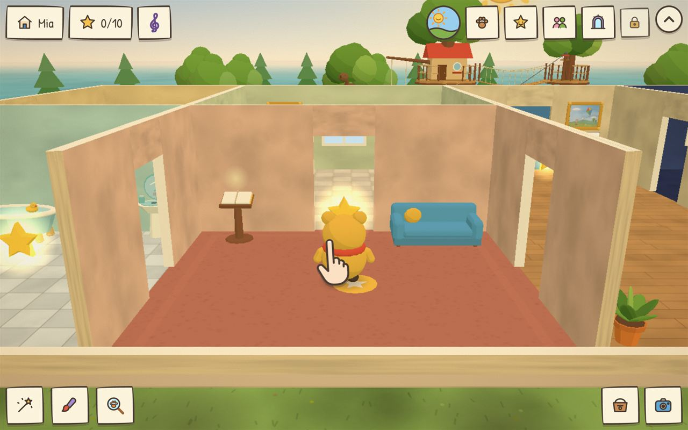
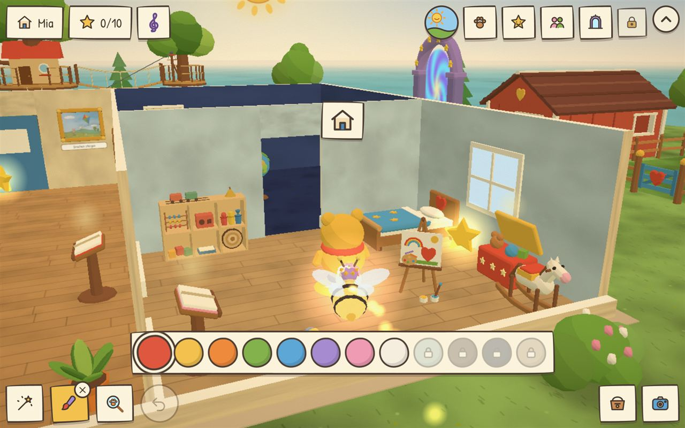
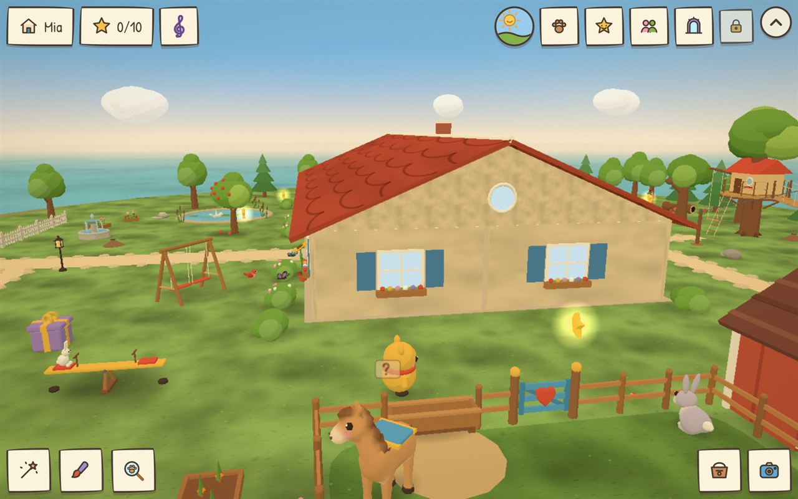
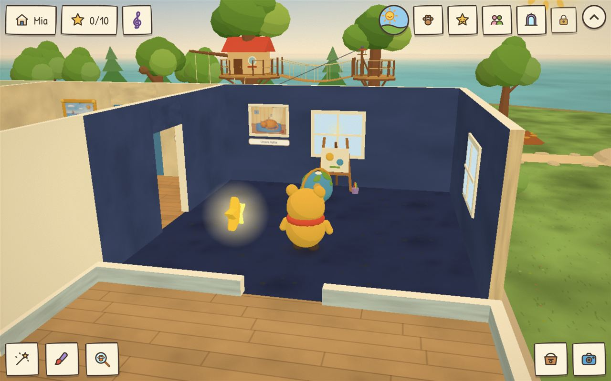
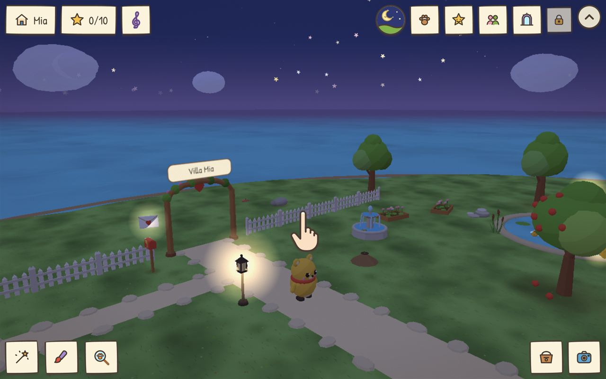

Eure Familienfotos werden zur eigenen kleinen Welt.
Die Erinnerungsvilla ist ein ruhiges 3D-Spiel für Kinder von 5 bis 9 Jahren. Eure Fotos hängen in Bilderrahmen und schweben als leuchtende Hologramme durch Haus und Garten – und euer Kind richtet alles so ein, wie es ihm gefällt.


Das Spiel
Entdecken, gestalten, kümmern.
Kein Zeitdruck, kein Verlieren, nichts Gruseliges. Die freundlichen Begleiter Lumi und Knuddel sprechen alles vor – so klappt es auch, wenn man noch nicht lesen kann.
Eure Fotos im Spiel
Familienbilder hängen an den Wänden und leuchten als Foto-Hologramme im Garten.
Zimmer gestalten
Möbel aufstellen, Wände, Dächer und Türen anmalen – jedes Kind baut seine eigene Villa.
Tiere & Bauernhof
Enten im Teich, Hühner, Schafe und ein eigenes Haustier, um das sich das Kind kümmert.
Foto-Missionen
„Mach ein Foto von deinem Essen!“ – kleine Aufgaben holen den Alltag ins Spiel.






Für Eltern
Eure Erinnerungen bleiben bei euch.
Wir haben die Erinnerungsvilla so gebaut, wie wir es uns für unsere eigenen Kinder wünschen.
- Alles bleibt auf dem GerätFotos und Sprachaufnahmen werden nicht hochgeladen – auch nicht zu uns.
- Keine WerbungKeine Banner, keine Videos, keine Kaufaufforderungen im Kinderbereich.
- Kein TrackingKeine Analyse-Werkzeuge, keine Werbe-ID, keine Konten.
- Funktioniert ohne InternetIdeal für unterwegs, im Auto oder im Urlaub.
- Ortsdaten entferntGPS-Angaben werden beim Import aus den Fotos gelöscht.
- ElternbereichHinter einer Rechenaufgabe: Einstellungen, Löschen und Datensicherung.
Hilf uns beim Start!
Bevor die Erinnerungsvilla im Google Play Store erscheint, suchen wir Familien mit Android-Handy oder -Tablet, die das Spiel 14 Tage lang kostenlos ausprobieren.
So wirst du Tester